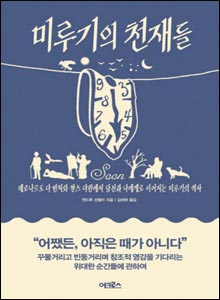

26
책에 대한 열정이 솟아나면 솟아날수록 글 쓰는 일은 더 어렵고 더 불가능한 일이 되어갔다. 나는 가장 긴급한 일을 가장 끝까지 미룰 수 있는, 그런 사람이다.
그래서 미루기에 관한 책을 쓸 수도 있었던 시간에 LP판을 알파벳순으로 정리했고, 라디에이터에 페인트를 칠했고, 누군가의 개가 숟가락을 보고 짖어대는 유튜브 영상을 보았다. 청소기로 계단을 밀었고, 온라인으로 농구 선수 클라이트 프레이저Clyde Frazier가 신었던 농구화를 주문했다. 할 필요도 없는데 굳이 부엌 바닥을 쓸었다. 냉장고에 남아 있는 치즈를 마지막 한 조각까지 먹어치웠고, 성공하진 못했지만 물이 새는 수도꼭지를 고쳐보려고도 했다. 심지어 (이건 깊고 어두운곳에 묻어둔 가장 치욕스러운 고백인데) 스포츠 라디오방송까지 귀 기울여 들었다.
147
태업은 미루는 행동과 관련이 있다. 가장 느긋한 노동자가 집단 전체의 성과를 저해하는 방식은 미루는 사람이 스스로를 방해하는 방식과 닮아 있다. 나는 테일러가 일터에서 태업하는 "정신이 나태한" 노동자들을 가차없이 묘사한 글을 읽다가 스스로를 돌아보지 않을 수 없었다. 돌이켜 생각해보면 태업이 내 직업 생활에서 어찌나 큰 지분을 차지하는지, 일하는 내내 공장 작업복을 입고 있어야 했나 싶을 정도다.
148
하지만 태업은 지구 어디에나 존재한다는 그의 말은 옳다. 상사에게 저항하고, 농땡이 피우고, 절대로 하면 안 된다는 걸 잘 알면서도 변태처럼 반드시 그 일을 하고 싶은(더 정확하게는, 반드시 해야 한다는 걸 잘 알면서도 절대로 그 일을 안 하고 싶은) 충동은 거의 모든 일터에 존재한다. 노동자들이 경영진에게 가운뎃손가락을 쳐들고 싶어 하는 일터에서라면 더더욱 그렇지 않겠는가. 태업은 용감한 저항의 수단이 될 수도 있다. 미국 남부의 아프리카인 노예 중 몇몇은 노예를 재산으로 보는 악덕 제도에 순응하는 대신 발을 질질 끌고 느릿느릿 움직여 일을 방해하거나 지연시켰다. 심지어 스스로 독을 먹은 사람도 있었다.
151
테일러가 1903년에 발표한 논문 <공장관리론Shop Management>에는 다음과 같은 전제가 깔려 있다. 노동자가 혼자서 유능하게 일을 해내리라 믿어서는 안 되며(잊지 말 것, 노동자들은 “정신이 나태하고” “태생이 게으르다”) 일의 종류가 뭐든 간에 관리자가 나서서 표준화된 최적의 기술과 속도를 지시해주어야 한다. 모든 일에는 “가장 적합한 단 한 가지 방식”(테일러리즘 및 효율성과 관련해서 자주 등장하는 문구다)이 있는바, 가장 적합한 방식을 찾아내어 그 방식을 노동자들에게 지시하는 경영관리가 모든 것을 결정한다.
275
미루기의 거장들이 내게 가르쳐준 게 있다면 그건 우리가 하고 싶어 하는 일이 대부분 진짜, 진짜, 진짜로 어려운 일이라는 거다. 다른 나라의 언어 배우기. 그동안 겁내고 있던 프로젝트에 착수하기. 데이트하고 싶은 상대에게 말 걸기. 우리를 불편하게 만드는 임무들이다. 실패와 고통, 난처함을 감수해야 하기 때문이다. 해야 하는 일이 그리 어렵지 않은 경우라도 유혹은 여전히 남아 일을 미루고 싶게 만든다. 그럴수록 과제는 더 어려워지고, 도전 정신을 더 많이 발휘해야 하고, 그러므로 더욱 흥미로워진다. 어쩌면 이러한 이유 때문에 미루기의 전문가들이 눈앞에 놓인 일에 당장 덤벼들기보다는 옷장을 정리하거나, 음악 스트리밍 서비스의 재생 목록 이름을 전부 다시 붙이거나, 따개비 연구를 하며 수년을 보내는 편이 훨씬 나을 거라고 생각하는 게 아닐까.
276
과학은 당장 손을 써서 세계를 훼손하는 짓을 멈추지 않는다면 이 세계와 함께 우리까지 파멸하고 말 거라고 경고한다. 하지만 사람들 대부분은 추상적인 미래보다 구체적인 현실에 더 관심을 쏟는다. 우리는 생각을 미루고 싶어 한다. 하지만 반성하고 방향을 바꿔야 한다. 그것도 너무 늦기 전에. 그러지 않으면 후회하게 될 테니까.
그런데, 하나도 후회하지 않길 바라는 게 더 황당한 일 아닌가?
당연히 나는 후회하게 될 것이다. 이미 후회 머신이다. 당연히 해야 할 일을 다 끝내지 못할 것이다. 어떻게 그러지 않을 수 있겠는가? 충분히 체계적이고 이성적으로 살아간다면 100퍼센트 만족스러운 상태로 죽을 수 있다고 믿는가? 나는 결코 스스로 원하는 만큼 완벽할 수 없을 것이고, 스스로 원하는 만큼 끝내주게 멋질 수도 없을 것이다. 나에겐 둘 다 필요하다. 해야 하는 일에서 도망가는 것도, 흠잡을 데 없는 착실함도. 후회도, 실천도.
281
몇 킬로미터를 걸어보고 다윈처럼 이 시골 풍경에서 영감을 얻을 수 있는지 확인해볼 수 있을 거야. 엽서에 나올 것처럼 아름다운 마을에서 작은 술집을 만날 수도 있어. 안 그래도 지도에서 근처 마을 이름을 보고 흥미를 느낀 참이었다. 비긴힐Biggin Hill. 배저스 마운트Badgers Mount. 프래츠 버텀Pratts Bottom. 내 눈에 이런 마을만 보인 걸까, 아니면 켄트 지방에 있는 마을 이름이 다 이렇게 선정적인 건가?•
● 직역하면 차례대로 ‘커다란 젖가슴 언덕’, ‘오소리의 교미’, ‘멍청이의 궁둥이’라는 뜻이다.
-------------------
읽으면서 빵빵터졌다.
책 구매일: 2019.02.28
책 읽기 시작해서 완독한 날짜: 2019.12.26
이걸로 모든 걸 설명(?)할 수 이쒀..............